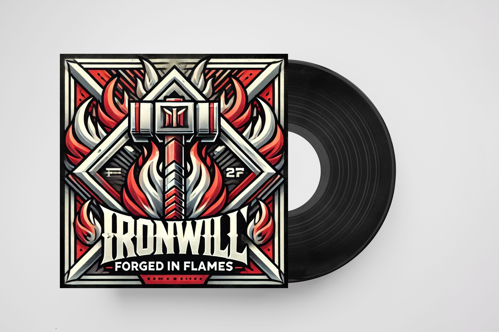

ALBUMY IRONWILL
15 LUTY 2021
March of Titans 23 MARCA 2020
Blood and Thunder10 KWIETNIA 2019
Echoes of the ForceForged In Flames
Album pełen surowej energii i nieposkromionej mocy. Każdy utwór brzmi jak gorący metal wykuwany w piecu pełnym pasji i buntu. „Forged in Flame” to muzyczna podróż przez piekło i z powrotem, gdzie ciężkie riffy spotykają się z epickimi melodiami. Kluczowe utwory takie jak „Ashes of the Past” i „Molten Heart” eksplorują tematy odrodzenia, wytrwałości i walki z przeciwnościami. Idealny dla tych, którzy czują, że ich dusza płonie niezłomną siłą.
March of Titans
Mroczna i refleksyjna opowieść o wewnętrznej sile i determinacji. W „Echoes of the Forge” IronWill prezentuje mieszankę melodyjnego metalu i emocjonalnych tekstów, które przypominają, że każdy dźwięk w metalu ma swoje echo w przeszłości. Utwory takie jak „Anvil's Call” czy „Legacy in Steel” pokazują, jak historia i wspomnienia kształtują nasze działania. To album dla tych, którzy wierzą, że siła nie pochodzi tylko z ciała, ale przede wszystkim z ducha.
Blood and Thunder
Eksplozja energii, która zamienia każdą chwilę w muzyczną bitwę. „Blood and Thunder” to album pełen hymnowych refrenów, szybkich riffów i epickich solówek, które brzmią jak wezwanie do walki. Każdy utwór to opowieść o nieustępliwości i zwycięstwie, z takimi kawałkami jak „Stormbringer” czy „Battlecry”. IronWill wzywa swoich słuchaczy, aby stawili czoła burzom życia z odwagą i niezłomnym duchem.
Echoes of the Force
Monumentalny i potężny album, który brzmi jak ścieżka dźwiękowa dla epickiej podróży bohaterów. „March of Titans” to muzyczna epopeja, gdzie ciężkie, rytmiczne riffy naśladują marsz niepokonanych tytanów, a liryczne historie o heroizmie i poświęceniu ożywają w utworach takich jak „Rise of the Colossus” czy „Steps to Eternity”. Każdy kawałek przypomina, że wielkość jest osiągalna, gdy kroczymy ścieżką determinacji i wiary w siebie.